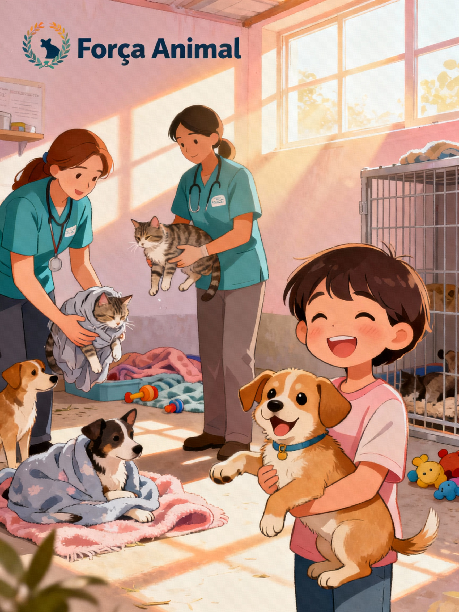

Como Ajudar:
Junte-se a nós para fazer a diferença na vida de centenas de animais abandonados! Como voluntário da Força Animal, você terá a oportunidade de contribuir com ações de resgate, cuidado, alimentação, abrigo temporário e, principalmente, carinho e amor para esses seres que tanto precisam.
Nosso trabalho depende do apoio dedicado de pessoas como você, que acreditam que cada gesto de compaixão pode transformar realidades. Além de ajudar diretamente os animais, você terá a chance de aprender sobre cuidados veterinários, prevenção de maus-tratos e organização de campanhas de conscientização.
Venha participar dessa rede de solidariedade! Inscreva-se hoje mesmo na aba de Cadastro.
